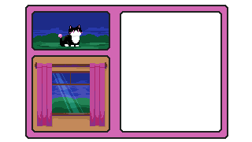

You bid farewell to the beach and meander back to the forest. The great Cheshire Cat smiles upon you. Silver beams of moonlight illuminate the path home, warding away the dark. Under its watchful eye, you return safely. The golden glow of the window beckons you inside, and you leap up onto the windowsill with ease. Your adventure has gone unnoticed, but tomorrow you will tell them. Mama will insist that you must see the mountains and the rivers at first dawn, and Papa will grumble but pack snacks nonetheless. They've left a plate for you, still hot with fresh made food. You scarf it down, the warmth seeping through you. In a sleepy haze, you find them and settle at Mama's side, laying your head down. Already, the Cheshire Cat beckons you into the dream realm. You go gladly, knowing you are safe. Tomorrow will bring another day of adventure, but for now, you rest.